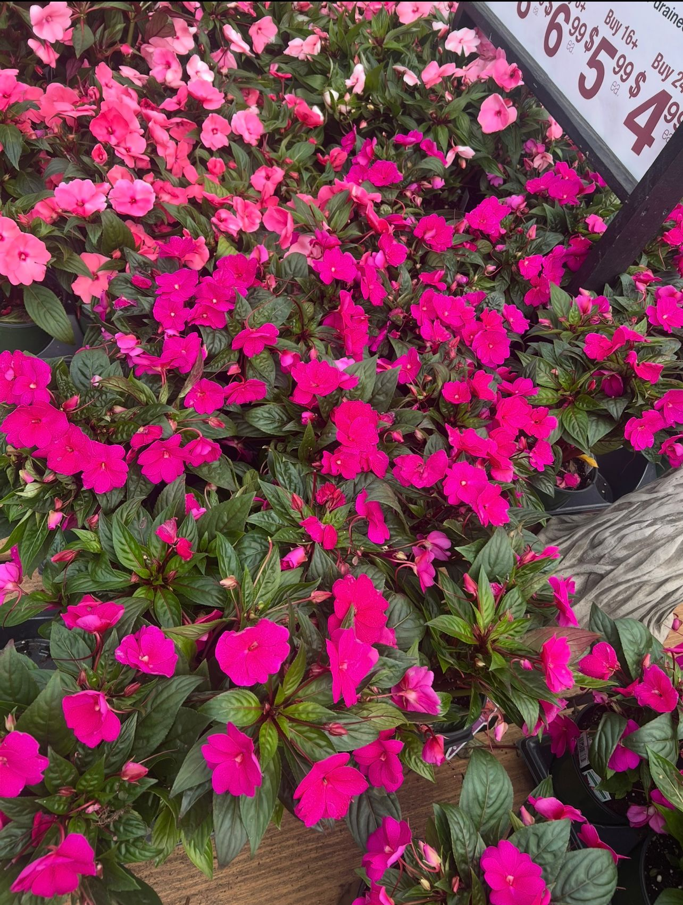
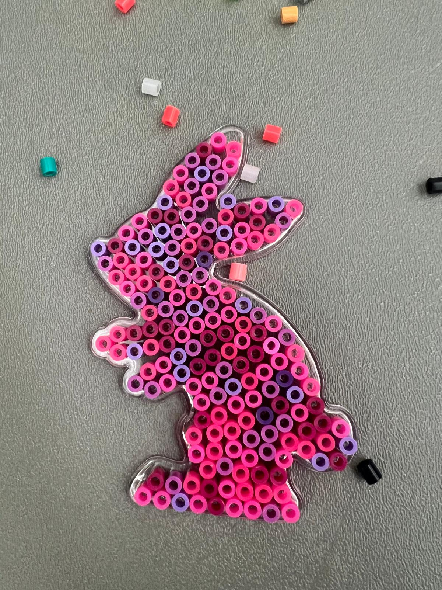

Welcome to My Little Corner
Hiiii! My name is Ojaswanie, and I’m obsessed with chai, pizza, and poetry. This website is a digital diary I created for my LIS351 class to experiment with random ideas and aesthetics.
Some fun facts about me are:
- I loveee Harry Potter (proud Slytherin 🐍)
- I often try to be artistic even though I’m not exactly a Picasso.
- In my free time, you’ll find me reading a novel and sipping on my chai.
- I love the color pink (if you couldn’t already tell from this palette!).
Random Little Things I Love


Explore to find stories that built me, poems that comfort me, and projects that keep me up at 2 a.m.